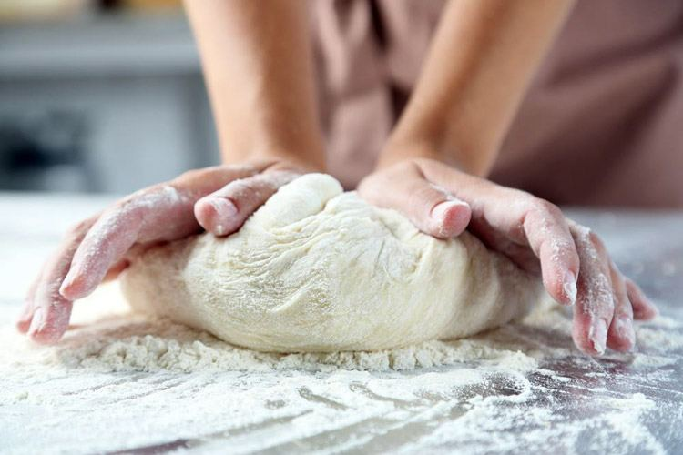

Fundraising

Gino’s Community Dough Program
You want the bucks, and we have the dough (pizza dough that is) to make it happen. Whether your organization is looking to earn bucks for new equipment, uniforms, scholarships, or just raising funds for a really-really great cause, we want to help you achieve your goals.
How Does It Work?
Simply put! You INVITE the people. SHARE your Fundraising Flier with everyone. We make the pizza. And you EARN 20% of the Sales (excluding alcohol and tips) that show their Fundraising Flier at time of purchase.
Need specifics?
Gino’s has designated Mondays, Tuesdays, and Wednesdays from 4pm - 9pm as our Community Dough Fundraising Days where 20% of Sales that show your Fundraising Flier will be donated to your organization. That means if we sell $1million dollars in pizza on your designated Dough Day, you will get approximately $100,000.00. Sound amazing? Then read on.
What Do I Have To Do?
- For starters, complete the form below. The more you share about your organization, the more we can help.
- After we receive your form and schedule your Community Dough Day you will invite your organizaiton, friends, and families to your designated Dough Days. Heck, invite San Luis Obispo!
- Gino’s will help your cause by creating a Digital Flier (THINK GREEN) for your event that you can SHARE with your supporters, and post on Instagram, Facebook, Calendars, etc., to help PROMOTE your event. EFFECTIVE fundraising is all about being PROUD, LOUD, and WOWED!
- Your DOUGH DAYS will only be as AMAZING as you make it. So INVITE! POST! SHARE YOUR FLIER! And POST some more! Remember your organization will get 20% of the sales that SHOW your FUNDRAISING FLIER at time of purchase.
- Upon completion of your Dough Day, you will complete a 1099 form for tax purposes, and we will cut you a check.
Sound GREAT? Then let’s set the schedule, promote your Dough Day, and help you achieve your fundraising Goals.
- Gino
*Please remember that your Fundraising Guest’s will have to show your Fundraising Flier at the time of their purchase in order for 20% to be donated to your cause.